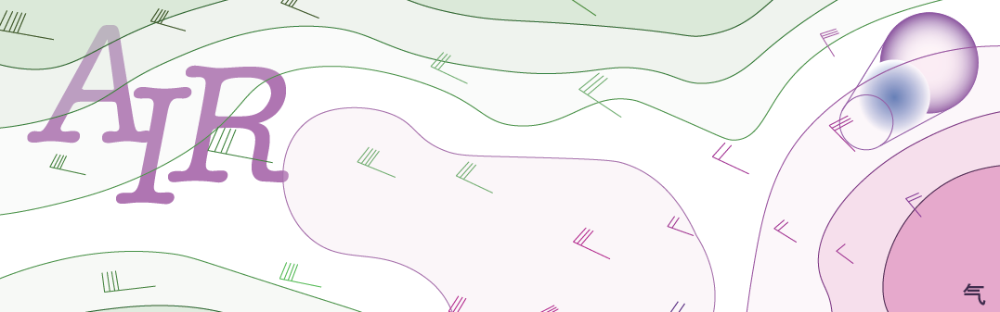
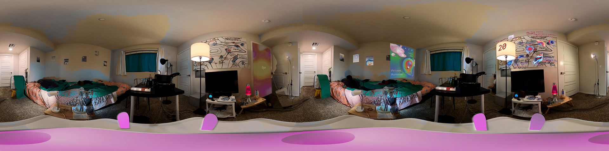
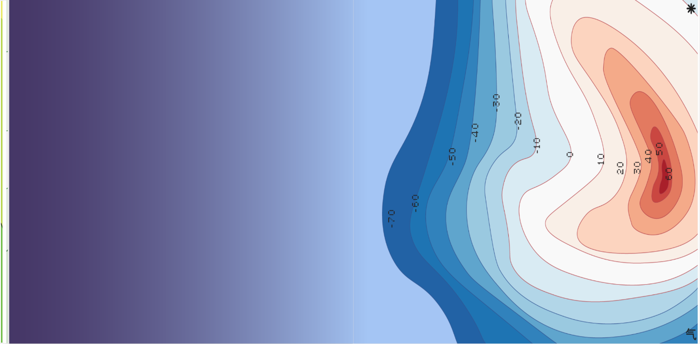
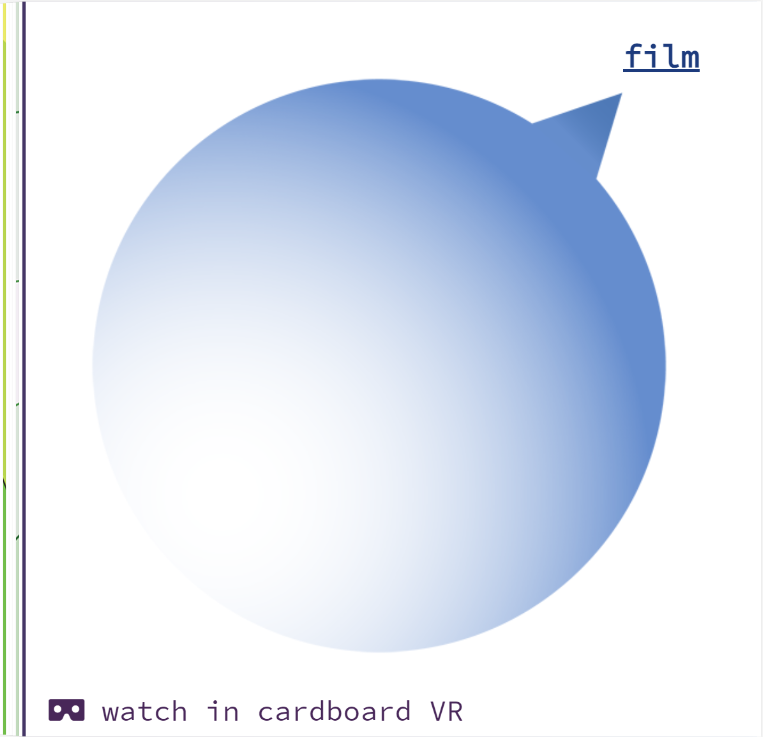
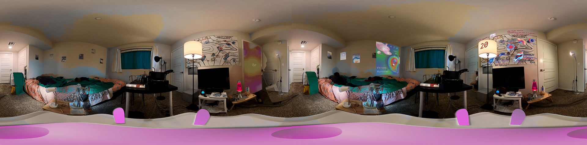
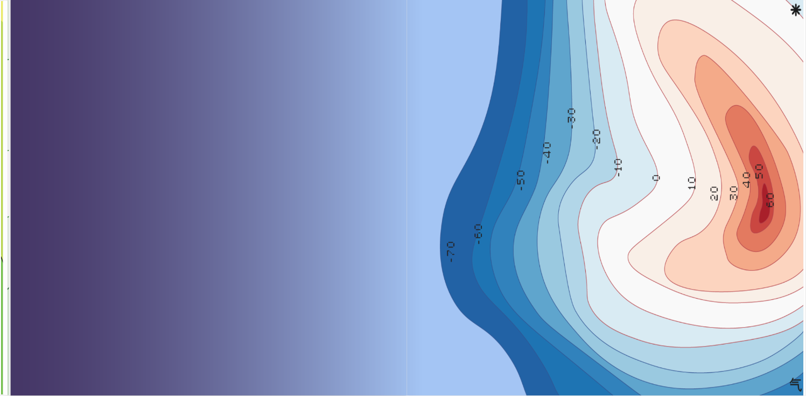
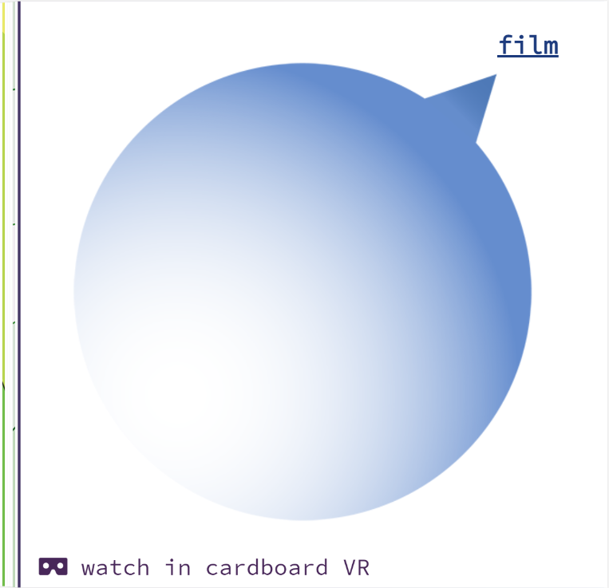

N e w
w o r k s
A I R
2 0 2 1

Air is a 360 video that shows three days of a person living with an AI system. In the situation where
artificial superintelligence (ASI) evolves into an alternative natural system, Air helps us understand
and predict events and disasters happening in this secondary nature. Inspired by Nora Khan's article,
Towards a Poetics of Artificial Superintelligence, Air depicts moments of time,
body and activities compressed and overlapped, in which our data are transformed and
transmediated to parts of a weather system.
Air is a collaboration by Zhengzhou and Zhengyang Huang.
.
.
.
Link to
flip book
Link to
video
As artificial superintelligence progresses, multiple superintelligences co-evolve
into a supernature. We are now under the influence of two natural systems. While
we already have forecasting systems for disasters in nature, how can we forecast
catastrophes that happen in supernature, as they are formed with the corresponding data
structures of everyone and everything?
AIR is here to help!
AIR reads the atmosphere in supernature. The forces of supernature are hard to track
as they extend beyond the 3 dimensions we live in. Now we have AIR who can forecast
and translate supernature events into atmospheric phenomena we can understand. It also
gives advice on how to deal with data gales, storms and hurricanes.
 





.
.
.